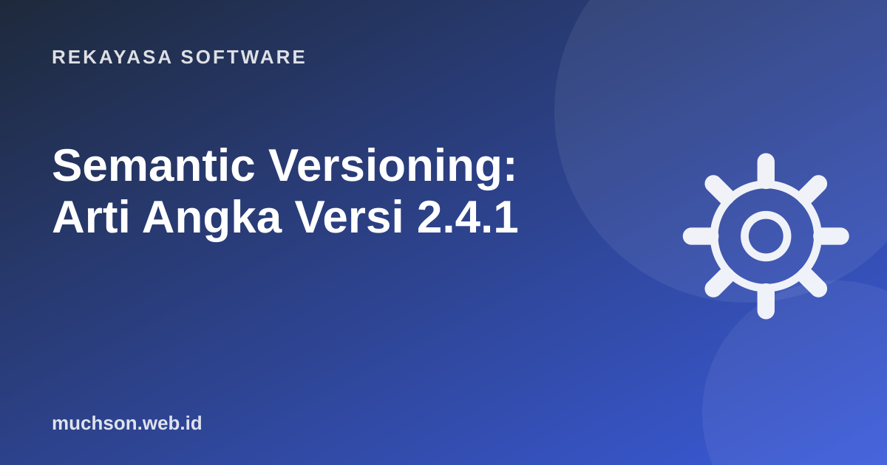

Beranda › Artikel › Rekayasa Software
Rekayasa SoftwareSemantic Versioning: Arti Angka Versi 2.4.1
Versi 2.4.1 bukan angka acak. Dalam Semantic Versioning, tiap angka adalah janji kepada pengguna perangkat lunak Anda: apakah pembaruan ini aman dipasang begitu saja, atau berpotensi merusak kode mereka.

Tiga angka, tiga janji
| Bagian | Naikkan bila | Contoh |
|---|---|---|
| MAJOR (2.x.x) | Ada perubahan yang tidak kompatibel: fungsi dihapus, parameter berubah arti. | 1.9.3 → 2.0.0 |
| MINOR (x.4.x) | Fitur baru yang tetap kompatibel dengan versi sebelumnya. | 2.3.7 → 2.4.0 |
| PATCH (x.x.1) | Perbaikan bug yang kompatibel. | 2.4.0 → 2.4.1 |
Saat MINOR naik, PATCH kembali ke 0. Saat MAJOR naik, MINOR dan PATCH kembali ke 0.
Versi 0.x.x: masa percobaan
Spesifikasi SemVer menyatakan versi 0.y.z untuk pengembangan awal: apa pun boleh berubah kapan saja. Versi 1.0.0 menandai API publik yang stabil. Banyak proyek terlalu lama di 0.x karena takut "berjanji"; padahal bila sudah dipakai orang di produksi, sebaiknya sudah 1.0.0.
Pre-release dan metadata
2.0.0-alpha.1 # versi uji awal
2.0.0-beta.3 # fitur lengkap, masih diuji
2.0.0-rc.1 # release candidate
2.0.0 # rilis final
2.0.0+build.57 # metadata build, tidak memengaruhi urutan versiSimbol ^ dan ~ di package.json
npm dan banyak manajer paket lain memakai SemVer untuk memutuskan versi mana yang boleh dipasang otomatis.
| Penulisan | Boleh memasang | Tidak boleh |
|---|---|---|
"4.17.21" | Persis 4.17.21 | Versi lain |
"~4.17.21" | 4.17.x (patch saja) | 4.18.0 |
"^4.17.21" | 4.x.x selama ≥ 4.17.21 | 5.0.0 |
"^0.3.2" | 0.3.x saja | 0.4.0 (pada 0.x, minor dianggap major) |
Lockfile (package-lock.json, pnpm-lock.yaml, composer.lock) mencatat versi persis yang terpasang. Commit lockfile agar semua orang dan server CI memasang versi yang sama.
Tentukan sendiri: versi berapa berikutnya?
Changelog: catatan untuk manusia
Angka versi memberi tahu seberapa besar perubahan; changelog memberi tahu apa yang berubah. Format populer dari keepachangelog.com mengelompokkan perubahan: Added, Changed, Deprecated, Removed, Fixed, Security.
## [2.4.0] - 2026-10-28
### Added
- Opsi bahasa Indonesia pada format tanggal.
### Fixed
- Pembulatan Rupiah salah untuk nilai negatif.
## [2.3.1] - 2026-09-12
### Security
- Perbarui dependensi yang memiliki celah keamanan.